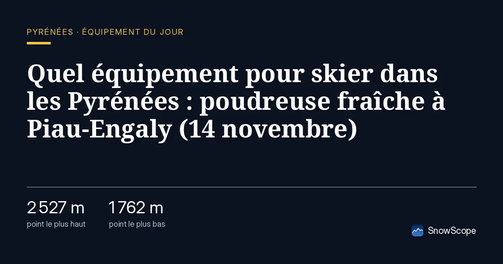
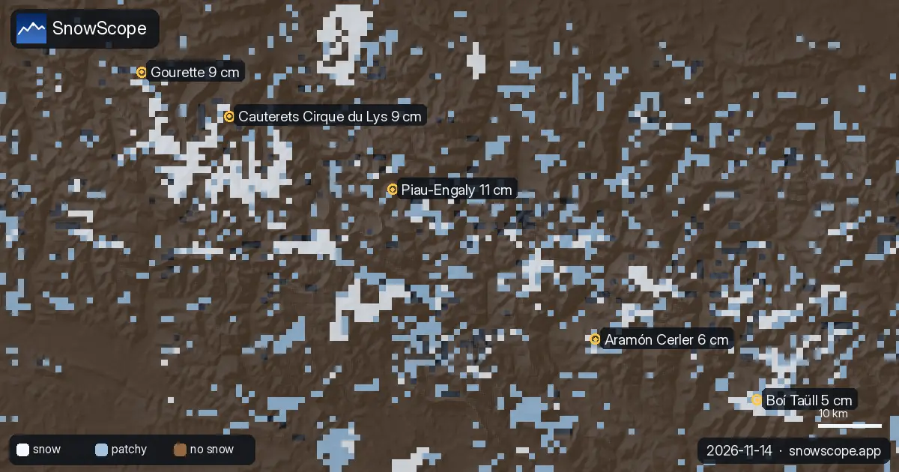
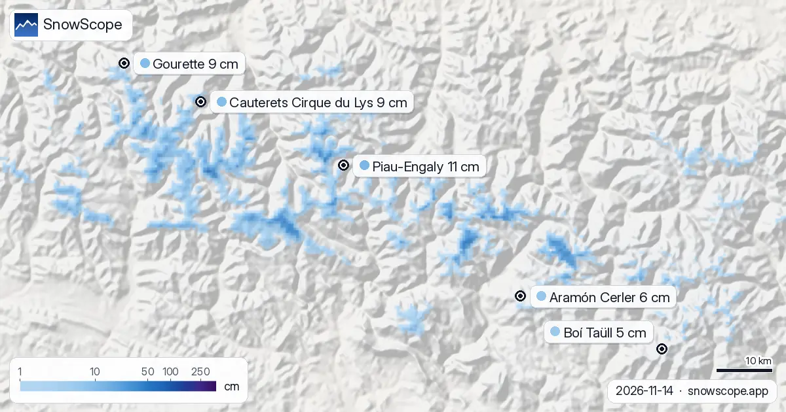

Quel équipement pour skier dans les Pyrénées : poudreuse fraîche à Piau-Engaly (14 novembre)
Samedi aux Pyrénées mélange neige fraîche, rochers affleurants et niveaux de congélation changeants qui s'échelonnent du-dessus des sommets bien au-dessous des vallées. La question pour les skieurs n'est pas quelle station choisir—c'est quels sous-vêtements, quelles carres et quels skis fonctionneront pour les trois conditions le même jour.
Consultez les prévisions neige en temps réel pour Piau-Engaly sur l'application SnowScopeHauteurs de neige, alertes poudreuse et carte 3D, gratuitement.
Trois stations avec de la poudreuse neuve, deux avec presque rien
Piau-Engaly, Cauterets Cirque du Lys et Gourette ont chacune reçu 20 cm ou plus de neige en trois jours. Piau-Engaly a mené avec 24 cm, Cauterets avec 24 cm et Gourette avec 20 cm. C'est assez pour skier hors-piste, mais seulement où l'épaisseur de base est importante. Les pentes supérieures de Piau-Engaly conservent environ 11 cm, Cauterets environ 9 cm et Gourette environ 9 cm.
Aramón Cerler et Boí Taüll ont reçu moins de neige : 13 cm et 11 cm en trois jours. Leurs pentes supérieures portent maintenant seulement 6 cm et 5 cm. Ce n'est pas de la poudreuse—c'est un fin voile sur ce qui se cache dessous.
| Station | Hauteur de neige | Neige fraîche, 72 h | Attendu, jours suivants | Sommet |
|---|---|---|---|---|
| Piau-Engaly | 11 cm | 24 cm | 8 cm | 2 527 m |
| Cauterets Cirque du Lys | 9 cm | 24 cm | 12 cm | 2 420 m |
| Gourette | 9 cm | 20 cm | 11 cm | 2 453 m |
| Aramón Cerler | 6 cm | 13 cm | 3 cm | 2 618 m |
| Boí Taüll | 5 cm | 11 cm | 1 cm | 2 747 m |

Où les rochers se cachent et la croûte se forme
La neige de début de saison dans les cinq stations repose sous 30 cm sur les pentes supérieures. Quand la couverture est aussi mince, chaque rocher, chaque bloc et chaque surface d'été durcie change l'endroit où vous pouvez skier en sécurité. Les pistes damées sont vos amies : les engins des stations ont dégagé le pire. Le hors-piste et les terrains non damés attendent un autre jour, quand la base sera plus épaisse.
La pluie et le risque de croûte pèsent sur Piau-Engaly, Aramón Cerler et Boí Taüll. Le niveau de congélation aujourd'hui se tient près ou au-dessus du sommet dans les trois. S'il tombe de la pluie au lieu de neige, ou si le soleil touche les pentes exposées au sud, la surface gèlera en une croûte dure le soir. Sur une croûte, les skis vibrent, les carres accrochent et les chutes font mal.

Variations de température : emportez des couches que vous pouvez enlever
Le niveau 0 °C—la hauteur où l'air passe du chaud au froid—est partout aujourd'hui. À Piau-Engaly il oscille de 2 210 m tôt le matin à 4 290 m l'après-midi. À Cauterets l'étendue est de 2 330 m à 4 240 m. Même à Gourette, qui est plus basse, l'oscillation va de 2 440 m à 3 640 m. Boí Taüll, le plus haut, voit 2 270 m à 3 950 m.
Ce que cela signifie : portez une couche de base et une couche intermédiaire que vous pouvez enlever. Commencez au froid au premier remontoir, enlevez des couches vers milieu de matinée. L'après-midi, les hauts sommets sont chauds. Dimanche et lundi cette oscillation s'aggrave avant que le système s'éteigne. Apportez une veste imperméable contre la pluie sur les pentes basses et la croûte soudaine quand le soleil frappe. Chauffe-cou pour le vent au sommet, lunettes pour la lumière plate de la neige fraîche.
Quelles carres, quels skis
Des carres affûtées sont non-négociables quand la neige est mince. Réservez un service local, ou louez : les boutiques de montagne affûtent les carres pour les conditions du jour. Les carres émoussées sur une croûte ne tiendront pas, et les carres émoussées sur la glace—qui se cache sous la neige mince—sont dangereuses.
Prenez des skis plus larges ou un snowboard si vous prévoyez de skier la poudreuse à Piau-Engaly, Cauterets ou Gourette. Mais restez d'abord sur la piste pour lire la neige. Une fois que vous savez où sont les rochers, aventurez-vous dehors. Si vous n'êtes pas sûr, louez plutôt que d'apporter vos propres skis : les boutiques de location locales ont l'équipement configuré pour les conditions de début de saison et peuvent vous changer quelque chose d'autre si la neige change.
Quand sortir et ce qui se passera ensuite
La première lumière est la meilleure. La neige est la plus ferme, la croûte n'a pas encore ramolli, et vous trouverez la poudreuse qui existe avant qu'elle ne soit piste. Vers milieu de matinée la surface tourne à la bouillie là où elle a réchauffé. L'après-midi, croûte.
Dimanche apporte plus de neige à Cauterets (12 cm prévus) et Gourette (11 cm prévus), mais seulement 8 cm à Piau-Engaly et 3 cm à Aramón Cerler. Boí Taüll verra à peine 1 cm. Lundi la neige s'arrête et la chaleur revient. Si vous pouvez skier dimanche matin après la neige nouvelle, faites-le. Lundi sera mince de nouveau.
Hors-piste : sachez ce dans quoi vous marchez
Avant de quitter la piste, lisez le bulletin officiel d'avalanche. Portez un détecteur de victime d'avalanche, une pelle et une sonde, savez comment utiliser les trois, et ne skiez jamais seul hors-piste. Un manteau neigeux mince peut cacher des couches fragiles et peut glisser sans avertissement.
Un jour comme celui-ci, avec 5 à 11 cm de neige nouvelle sur une base à peine plus épaisse, le risque d'avalanche est bas mais non nul. Le vrai danger est de heurter un rocher, une souche ou l'herbe d'été sous la couverture. Ce n'est pas un problème d'avalanche ; c'est un problème de collision. Cela termine quand même votre journée en hélicoptère.
Conseils aux skieurs
- Allez au premier remontoir tôt et restez sur les pistes damées jusqu'à ce que vous ayez senti la neige et vu où les rochers percent la surface.
- Emportez une couche que vous pouvez enlever vers milieu de matinée : l'air se réchauffe vite avec la baisse d'altitude, et le niveau de congélation monte toute la journée.
- Affûtez vos carres ou louez localement : les boutiques ont affûté les skis pour la neige mince et dure de début de saison.
- Vérifiez le bulletin officiel d'avalanche avant tout projet hors-piste, et allez avec d'autres, pas seul.
- Dimanche apportera plus de neige aux stations françaises—si les prévisions ne changent pas, skiez dimanche matin avant que la croûte durcisse lundi.
À propos de ces chiffres
Les hauteurs de neige des stations sont la neige la plus épaisse sur le haut du domaine à la date indiquée ; ce sont des estimations pour une zone, pas une mesure en un point. Les prévisions peuvent changer. Consultez toujours le bulletin d'avalanche officiel avant le hors-piste.
Bulletins d'avalanche officiels: Météo-France / Meteocat / AEMET
Citer ce bulletin
Pour la recherche, l'enseignement ou la presse : chiffres et graphiques réutilisables librement sous CC BY 4.0 avec cette citation.
SnowScope (2026), Quel équipement pour skier dans les Pyrénées : poudreuse fraîche à Piau-Engaly (14 novembre), https://snowscope.app/blog/fr/2026/11/pyrenees-what-to-bring-ski-gear-conditions-14-november-2026.html, consulté le 2026-11-14
SnowScope (Atlas Labs). (2026, November 14). Quel équipement pour skier dans les Pyrénées : poudreuse fraîche à Piau-Engaly (14 novembre). SnowScope snow reports. https://snowscope.app/blog/fr/2026/11/pyrenees-what-to-bring-ski-gear-conditions-14-november-2026.html
BibTeX
@misc{snowscope2026pyreneeswhattobringskige,
author = {{SnowScope (Atlas Labs)}},
title = {Quel équipement pour skier dans les Pyrénées : poudreuse fraîche à Piau-Engaly (14 novembre)},
year = {2026},
month = nov,
howpublished = {\url{https://snowscope.app/blog/fr/2026/11/pyrenees-what-to-bring-ski-gear-conditions-14-november-2026.html}},
note = {Published 2026-11-14 12:19 UTC; accessed 2026-11-14}
}· CC BY 4.0 · Méthodes, données et outils →
Piau-Engaly : neige et température selon l'altitude, cet hiver vs l'hiver dernier (outils) →
Suivre Piau-Engaly
Gratuit : un message quand la neige arrive, et la météo chaque matin.
Autres bulletins neige

Boí Taüll commence à 2 039 m et bat Baqueira Beret sur le prix du forfait, bien que la neige de début décembre demande un peu de patience.

Trois hivers maigres d'affilée ont pris fin en 2025-26 ; cet automne a commencé normalement.